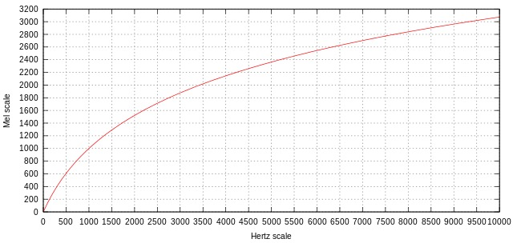
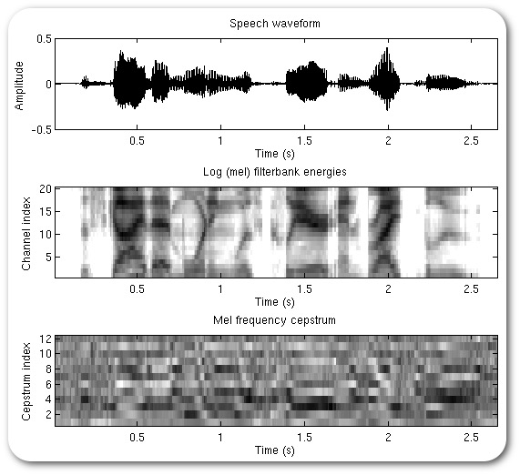
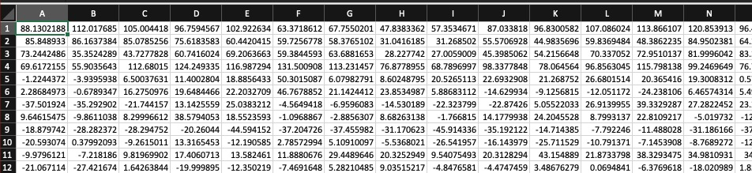

# Cepstra, Pitch Tracking and Voice Activity Detection ### Will Styler - LIGN 168 --- ### Last time, we talked about estimating the filter - LPC gives us a sense of how the vocal tract is *filtering* the vocal folds - We estimate the filter's shape, independent of the voicing (the 'excitation signal') - We discussed how LPC can be used to deconstruct and then reconstitute the voice - **... but what about estimating the source?** --- ### The Excitation Signal - To do LPC synthesis and resynthesis, we need two pieces of information about the source - What is the pitch/fundamental frequency/f0 of the voice? - Where (during the duration of the file) is there voicing to reconstruct? - "From 253-284 ms, there's no voicing" - Are there any irregular pulses? - "There's creak here, so, drop single pulses here, here, and here" - We can model this, effectively, as a series of numbers indicating f0 over time, with 'zero' as an option - With some noise modeling for not-so-voicing-like components --- --- ### To get this, we need to be able to reliably find f0! - ... and to find where somebody's talking at all - So, how's that happen? - ... and what kind of representations of speech are used to generate it? --- ### Today's Plan - The Cepstral Domain - Mel Frequency Cepstral Coefficients (MFCCs) - Voice Activity Detection - How do we determine the f0 of the voice? --- ## The Cepstral Domain --- ### We've already thought a lot about the time domain - Amplitude varying over time gives us the 'time domain' - Waveforms view signals in the time domain - **Very good** for understanding pressure, for playback, and otherwise --- ### Then we went into the frequency domain - "What are the component frequencies and their time courses of this signal?" - Fourier Transform turns a time-domain signal into a frequency domain signal - **Very good** for seeing frequency components, spectral balance, and resonance --- ### Now we're going into the cepstral domain - "What are the dominant patterns of periodicity? What rates of change matter most?" - We do a *cepstral* transformation to see the cepstral domain - **Very good** for seeing periodicity and patterns of change --- ### To do a Cepstral Transform - First, do fourier analysis to get a spectrum of a signal - Then, log **each individual amplitude measure in the power spectrum** - This de-emphasizes larger values, and has other mathematically convenient purposes - Then, do a fourier analysis *of the log-transformed fourier analysis*! - This captures the periodicities *of the spectrum itself* --- <img class="r-stretch" src="phonmedia/spectrum_ae.png"> --- ### This results in a 'cepstrum' - Cepstra show amplitude by **quefrency** - This can be shown on a **cepstrogram** - Filtering in the cepstral domain is **liftering** - Spectra separate components by frequency - Cepstra separate components by rate of change - They're not straightforward to interpret for humans --- <img class="r-stretch" src="phonmedia/waveform_eh.png"> --- --- --- ### This is a very common signal processing tool - Excellent when what you care about boils down to a change in rate of change - ... and is very important for... --- ## Mel-Frequency Cepstral Coefficients (MFCCs) --- ### Mel-Frequency Cepstral Coefficients turn sounds into matrices - Each frame is put into the frequency domain and scaled to Mels - Then it's put into the quefrency domain, to emphasize time differences - Then, we reduce the dimensionality using DCT --- ### Why Mels? --- ### Our perception of frequency is non-linear - This is partly due to hearing anatomy - This is partly evolution's fault too - We care primarily about ~80-4000Hz! --- ### ... but Hertz doesn't capture this at all - Hertz captures cycles per second - ... but not our perception of frequency! --- ### Our perception of frequency is weird! - We've already talked about auditory masking - Two sounds within the same 'critical band' seem like one sound - We also percieve jumps in frequency non-linearly --- ### Do we hear frequency in a linear and reliable way? Is the jump in file A the same as in file B? A. <audio controls src="phonmedia/jump_400_600.wav"></audio> B. <audio controls src="phonmedia/jump_10400_10600.wav"></audio> - **Both of these are a 200Hz Jump!** --- Is the jump in file A the same as in file B? A. <audio controls src="phonmedia/jump_400_500.wav"></audio> B. <audio controls src="phonmedia/jump_6400_6500.wav"></audio> - **Both of these are a 100Hz Jump** --- ### So, our perception of frequency isn't Hertz-like - **We want a perceptual scale for hearing!** --- ### Mel Scale - Maps numerical pitch measures to human perceptions of changes in pitch - People will tell you that a sound's pitch is 'half as high' at x/2 mels relative to x mels - Mel is the dominant perceptual frequency scale in use --- ### Mel Scale  --- ### Mel Formula - Mel(f) = 1125 \* ln(1+f/700) - f = Frequency in Hertz - This is a natural log - There are multiple formulae! --- ### MFCCs approximate human hearing better - Mels scale to the frequencies which matter to humans - ... and hopefully that helps the computers find the most important elements of speech, too! --- ### Mel-Frequency Cepstral Coefficient Process, Continued - Each frame is put into the frequency domain and scaled to Mels - Then it's put into the quefrency domain, to emphasize time differences - Then, we reduce the dimensionality using DCT --- ### MFCCs  --- ### Discrete Cosine Transform (DCT) - DCT breaks a complex curve into the sum of many cosine functions' coefficents - "Which frequency of cosine functions would we need, and with what power, in order to describe the shape of this curve?" - Each cosine we 'need' is a coefficient - More coefficients mean more detail, but also more data - Some coefficients *really won't matter at all*, and can be discarded or set to zero --- ### DCT for MFCC - "Let's find the most meaningful N coefficients which describe what's going on in the cepstrum *for each frame*" - We get a set of numbers which describe the frame-by-frame cepstral shape of the sound - With some of the least important coefficients thrown away - Usually the first 12-13 coefficients are used in MFCCs - The highest frequencies aren't as relevant in the cepstral domain --- ### We're going to see DCT a LOT this quarter - Particularly next week - [You should watch Computerphile's Video on DCT](https://www.youtube.com/watch?v=Q2aEzeMDHMA) - This will also prepare you for our discussion on compression and codecs --- ### MFCC Input <img class="r-stretch" src="phonmedia/noisewaveform.jpg"> --- ### MFCC Output  --- ### So, the sound becomes a matrix of features - Many rows (representing time during the signal) - N columns (usually 13) with coefficients which **tell us the spectral shape** - It's black-boxy, but we don't care. - We've created a Matrix --- <img class="r-stretch" src="humorimg/whoa_neo.jpg"> --- ### Nerdy Aside: MFCC vs. PCA - In practice, MFCC is not so different from doing Principal Component Analysis on a log spectrum - Both find dominant patterns of variation in the time domain - They're not exactly equivalent, but the results are very close - This helps with intuition, if you're used to PCA! --- ### Both MFCC and LPC represent the spectral shape - LPC tries explicitly to model only the filter - MFCC models everything, agnostically - It's also much better for simplifying the signal than LPC --- ### Now we've got a matrix representing the sound - ... which captures frequency information, according to our perceptual needs - This will be useful for many things, including... --- ## Voice Activity Detection --- ### Not every sound file contains speech - ... sadly - One important task before we start modeling speech is detecting whether it's present or not - This is referred to as 'Voice Activity Detection' or VAD - "In this file, for every frame, tell me whether there's voicing or not" --- ### The Simplicity/Complexity Tradeoff in Speech Tools - There is a 'dumb and cheap' way to do a task - Poor results, but extremely fast computation and low data requirements - Balanced approaches between complexity and accuracy often exist - Reasonable results, at cost of complexity and required training data - Often, these are the top performing 'legacy' approaches - Expensive and accurate approaches exist, but require lots of compute or *massive* training data - Neural approaches often fall into this category - **We'll see this tradeoff again and again this quarter!** --- ### Dumb and Cheap VAD methods - These work poorly, but cheaply! - **Signal Intensity**: "Is this signal loud enough to be voice?" - This is useful for detecting speech vs. silence - **Spectral Slope**: "Is there more energy at the lower frequencies than higher frequencies?" - Speech generally has a falling spectral slope - **Zero-Crossing Rate**: "How often does this signal cross zero?" - Speech has different rates (due to expected f0 ranges) than non-speech --- <img class="r-stretch" src="phonmedia/waveform_ae.png"> --- ### Balanced Approaches to VAD - **Classification based on Spectral Features**: Use machine learning classifiers to interpret frequency patterns as 'voice' or 'non-voice' - "Does this particular balance of power in the spectrum look speechy?" - **Classification based on Mel-Frequency Cepstral Coefficients**: Use ML classifiers to interpret MFCCs as "voice" or not. - "Here's what this sound looks like in its entirety. Is it speechy?" - Often, this uses Hidden Markov Models and Gaussian Mixture Models to do the classification - But other classifiers work too! --- ### Expensive and Accurate Neural VAD systems - Turn a great deal of training data into a matrix of numbers somehow (MFCCs, wav2vec, or others) - Label the data as 'speech' and 'non-speech' - This is generally data from a particular language - Train a deep neural network on that data - Usually CNN, RNN, or LSTM - The neural network looks at the data and decides - Often *very* robust to noise and more adaptable to new segments --- ### The output is a frame-by-frame vector full of 0 and 1 - 0 indicates 'No speech in this frame' - 1 indicates 'There be speech here' - Some algorithms give you probabilities too - "42% chance of speech here" --- ### VAD can be hard! - Speech in noise is hard to detect, especially when quiet - Complex approaches may not detect un-trained kinds of speech - Fricatives, clicks, or segments outside the training data - Human voices are very variable - Children vs. Adults - Environments vary a lot - Voice detection in a crowded restaurant is a different task - Cost is a factor - The 'best' algorithm may be too slow or expensive for the use case --- ### Tuning for desired types of error - [All models are wrong, some are useful](https://en.wikipedia.org/wiki/All_models_are_wrong) - You should make sure your analysis fails optimally - Do I want to *favor preserving as much speech as possible*, and detect other things as speech more often? - More false positives - "Failing safe" - Do I want to *favor preserving only speech*, and throw out everything I'm not sure about? - More false negatives --- ### Evaluating VAD - What amount of speech is clipped away (at the start and middle of speech)? - What amount of noise is called speech at the end of speech? - What amount of noise labeled as speech? --- ### What is VAD useful for? - **Constraining Analyses**: Discard non-speech frames when doing (e.g.) LPC - **Removing Silences**: In this recording, mark the places somebody's talking for transcription - **Mute-when-not-talking**: Don't transmit the mechanical keyboard clicking please - **Call Compression**: Don't send sound data to the other person when no speech is occurring - **Telemarketing**: Make robocalls, and then put a human on the line only if a human answers --- ### "OK, great, we know where there's talking" - "... but we still have to model the f0, how's that work?" --- ## f0 Detection --- ### How do we identify the f0 of a voice? - What is the fundamental frequency in a given frame? - "168 Hz in frame 134" - Where are the boundaries of individual glottal pulses? - "Delineate the right edge of each period in the glottal cycle in this file" - What's the irregularity of the signal? - Do we need to model variation in the cycle time? --- ### Dumb and Cheap f0 Detection - **Zero Crossing Rate (with filtering)**: I expect f0 to be between 80 and 350 Hz, so possible zero crossing rates associated with the fundamental would be between X and Y.... - **Cepstral Analysis**: Look for prominences in the Cepstral domain, where the voicing cycle should give a prominent peak - A related measure is **Cepstral Peak Prominence**, a measure of noise in voicing signals - **Harmonic Product Spectra**: Take an FFT, then downsample it, and multiply the original by the downsampled version, then repeat - The peaks associated with f0 (including harmonics) will grow stronger, and the noise will fade away --- <img class="r-stretch" src="phonmedia/spectrum_uh.png"> --- ### The Balanced Approach: Autocorrelation for f0 Tracking <img class="r-stretch" src="diagrams/autocorrelation_animation.gif"> --- ### Autocorrelation is a very common approach for f0 tracking - Identify candidate pitches based on autocorrelation spikes for lag - "Huh, big spike at 10ms lag, this is probably a 100Hz signal" - Filter out candidates which fall outside the expected pitch domain (e.g. outside 50 to 400 Hz) - This isn't always desirable for some kinds of voice study - These candidates go on to be post-processed, so we can choose the right candidates! - **This is how Praat (and others) do f0 tracking** --- ### [Post-Processing Constraints on f0 Data in Praat](https://www.fon.hum.uva.nl/praat/manual/Sound__To_Pitch__filtered_ac____.html) - **Silence threshold**: How quiet should a frame be before we call it voiceless? - **Voicing threshold**: How much autocorrelation do you need to consider something voiced? - **Octave cost**: How much do you want to favor higher-frequency candidates? - **Octave-jump cost**: How much do you want to avoid sudden octave jumps? - **Voiced/unvoiced cost**: How much do you want to penalize switching from 'voiced' to 'voiceless' --- ### We can smooth the output of this function, too - We don't tend to suddenly jump way up or down in f0 in one or two cycles - Dynamic Programming approaches work well for this - "Find the smoothest path through all the candidates" --- ### There are other approaches - Phase-based approaches - Very fancy signal processing approaches - e.g. [Reassignment Methods](https://en.wikipedia.org/wiki/Reassignment_method) - Neural Network approaches - Good for extracting speech pitch from other pitched noise --- ### Aside: More direct measures can be more reliable - Where knowing pitch is crucial (e.g. recording for text-to-speech), other information sources are used - Electroglottography (EGG) gives much more reliable and detailed f0 information --- <img class="r-stretch" src="phonmedia/egg_electrodes.jpg"> --- ### Difficulties with f0 tracking - Variability of f0 - Children and Sopranos have higher f0 than expected - Periodic Background Noise - Try doing f0 detection with sheep and goats in the background - Octave Jumps - It's very easy to find 300 Hz as the 'f0' of a 150Hz Signal --- ### Difficulties with f0 tracking (Continued) - Speaker overlaps - Two people talking over each other make complex signals - ... but f0 differences are a great way to identify when there are two speakers! - f0 has some variability which you need to model - Both in period ('jitter') and amplitude ('shimmer') - Modeling when f0 stops can be tricky - ... and if you do it wrong, it's very much not good --- ### Why is f0 tracking useful? - **Modeling the voice:** LPC requires good information about the excitation signal - **Measuring f0:** f0 is a great cue for many phenomena in many languages - Particularly in tone languages! - **Identifying musical notes:** These same algorithms work great for finding the pitch of musical instruments, too! - **Finding pulses:** Once you've found a fundamental, you can identify pulses too - ... and of course.... --- ### Modifying the pitch of a voice! - Next time! --- ### Wrapping up - Voice Activity Detection identifies frames where there's speech - There are many approaches to VAD, suiting many needs - f0 detection helps us identify the pitch of the voice over many frames - There are many methods, but autocorrelation is unreasonably effective --- ### For Next Time - We'll think about how to modify the source, and the filter! --- <huge>Thank you!</huge>